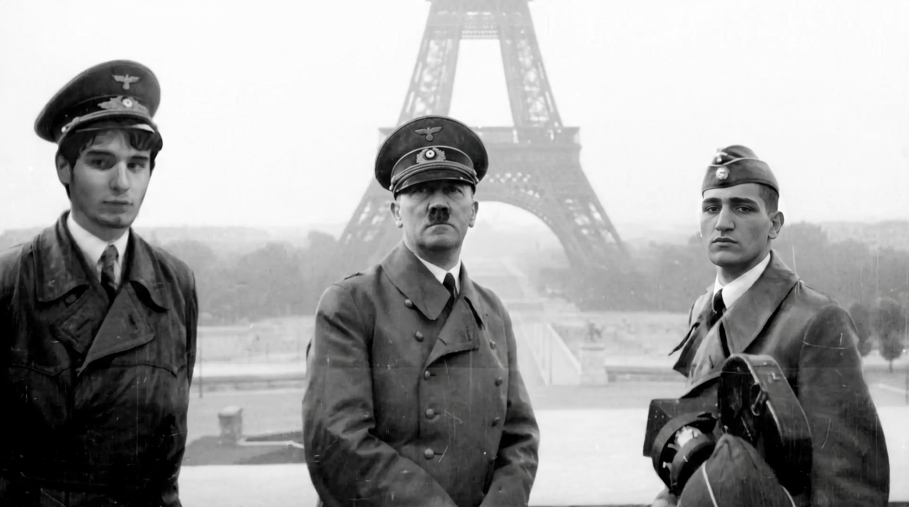

1939
The invasion
Germany invaded Poland on 1 September. Britain and France declared war two days later, beginning the European war.
CHAPTER 01 / THE OUTBREAKNot a list of dates. Not a distant chapter in a textbook. A closer look at the photographs, decisions, occupation, resistance, and human lives that shaped one of history’s darkest eras.
World War II reached far beyond battlefields. It changed cities, shattered families, displaced millions, and gave state power a devastating reach into ordinary lives. Photographs can bring us closer to that past—but a photograph is only the beginning. We need context, reliable sources, and the willingness to look carefully.
Explore the image collection. Open any file for a closer look. Captions are deliberately cautious where a photograph’s original source has not been confirmed.
input_file_0.png through input_file_9.png are matched automatically. If filenames differ, PNG files are assigned in alphabetical order.Source note: these files are the images supplied with this website. The visual labels below are editorial descriptions, not proof of identity or provenance. Confirm dates, locations, people, and events through museums, archives, and documented collections before presenting an identification as fact.
A concise timeline to orient the archive. Each date marks a turning point, but the human story extends far beyond any single moment.
Germany invaded Poland on 1 September. Britain and France declared war two days later, beginning the European war.
CHAPTER 01 / THE OUTBREAKGerman forces occupied Paris in June. Across Europe, occupation transformed daily life and expanded persecution.
CHAPTER 02 / OCCUPIED EUROPENazi Germany expanded its war eastward. Mass shootings and deportations formed part of the Holocaust, alongside the killing centres.
CHAPTER 03 / GENOCIDEAllied advances liberated occupied territories and camps. Germany surrendered in May 1945; the war ended in Europe.
CHAPTER 04 / AFTERMATHThe Holocaust was the systematic persecution and murder of six million European Jews by Nazi Germany and its collaborators. It developed through years of antisemitic exclusion, dispossession, forced displacement, mass shootings, deportation, and murder in ghettos and killing centres.
Nazi Germany and its collaborators also persecuted and murdered other groups, including Roma and Sinti people, disabled people, Polish and Soviet civilians, Soviet prisoners of war, and others. The experiences of these groups were distinct, but all were shaped by Nazi racial ideology, war, and state violence.
German forces entered Paris on 14 June 1940. France’s defeat led to occupation in the north and west and to the collaborationist Vichy regime in the south. Daily life was reshaped by censorship, shortages, repression, collaboration, and resistance.
Occupation was not a single experience. People faced different choices and dangers, while Jewish residents were progressively excluded, arrested, deported, and murdered as part of the Holocaust across Europe.

History deserves more than a quick glance. Explore the records, ask where they came from, and remember that behind every document are real people and real consequences.
Return to the records ↑Image identification and provenance should be checked against a trusted archival source.